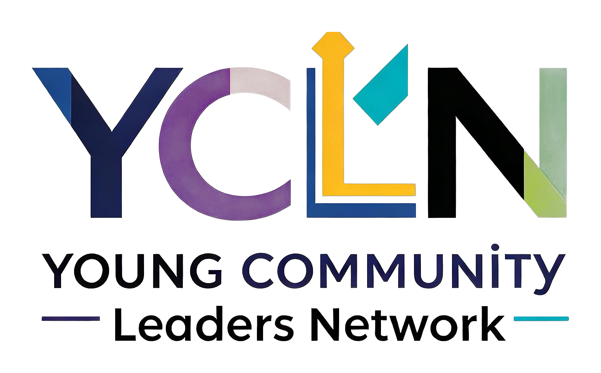
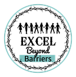

Our focus is young people aged 18 to 25, especially those not in education, employment or training (NEET), who have the talent but not the networks. We equip them with skills, networks and coaching to lead, in law, finance, technology, property and beyond. We provide the development. Our partners provide the doors.
Every pathway starts at entry level. For now, each industry offer covers CV building and interview skills, with roles added as they come up. Register your interest and we will match you to partners and opportunities as they open.
New: our Law pathway is delivered in collaboration with BPP StreetLaw, commencing January 2027. Ask us about applications.
Entry level pathway. Starts with CV building and interview skills, with roles added as they come up.
Register interestEntry level pathway, in collaboration with BPP StreetLaw, commencing January 2027. Starts with CV building and interview skills, with roles added as they come up.
Ask about StreetLawEntry level pathway. Starts with CV building and interview skills, with roles added as they come up.
Register interestEntry level pathway. Starts with CV building and interview skills, with roles added as they come up.
Register interestEntry level pathway. Starts with CV building and interview skills, with roles added as they come up.
Register interestEntry level pathway. Starts with CV building and interview skills, with roles added as they come up.
Register interestEntry level pathway. Starts with CV building and interview skills, with roles added as they come up.
Register interestYCLN is the development layer. Every member can opt in to the programmes that fit their goals, before stepping through the doors our partners open.
A six-week, cohort-based programme built with young people, for young people. Communication, professional skills, and the practical capabilities employers actually look for.
Open to all membersNetworking is a skill, not a talent. Workshops that turn introductions into relationships, and relationships into opportunities.
Open to all membersStructured coaching that helps you set direction, build confidence, and take ownership of your career, whichever industry you choose.
Open to all membersOur flagship programme flips traditional mentoring on its head. Young adults aged 18 to 25 mentor senior professionals leading regeneration projects. Your lived experience is the expertise. Community intelligence flows upward into the decisions that shape where you live. You are not a participant. You are a leader.
Establishing the mentoring relationship, storytelling as intelligence, asset mapping, and identifying hidden issues.
Site observation, stakeholder mapping, trust audits, community aspirations, and design input.
Business case development, opposition navigation, feasibility, and sustaining engagement.
Insight synthesis, stakeholder presentation, delivery, and celebration. You present to decision-makers.
We develop young people. Our partners deliver the experience layer: placements, insight and industry access.
Home of the StreetLaw programme, commencing January 2027.
Supporting early-career exploration and discovery.

Delivery partner for the RegenAct reverse mentoring programme.
Partner for career skills development workshops.
YCLN began as the Young Community Lawyers Network, a youth-led movement closing the gap between underserved communities and the legal profession. Young people told us the same barriers exist in every industry, so we evolved. Same mission, same model, much bigger doors.
We remain youth-led, designed and shaped by over 200 young people, including those not in education, employment or training. We believe young people from migrant and marginalised backgrounds deserve the same access to professional careers as anyone else, and the best way to achieve that is to let young people lead.
Whether you are a young person, a future facilitator, or an organisation that shares our values, we want to hear from you.